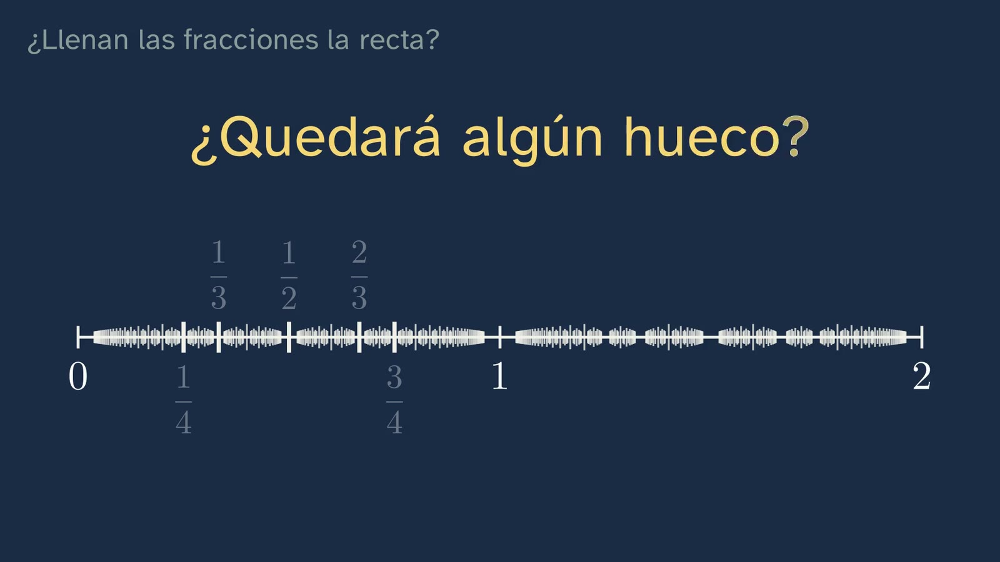
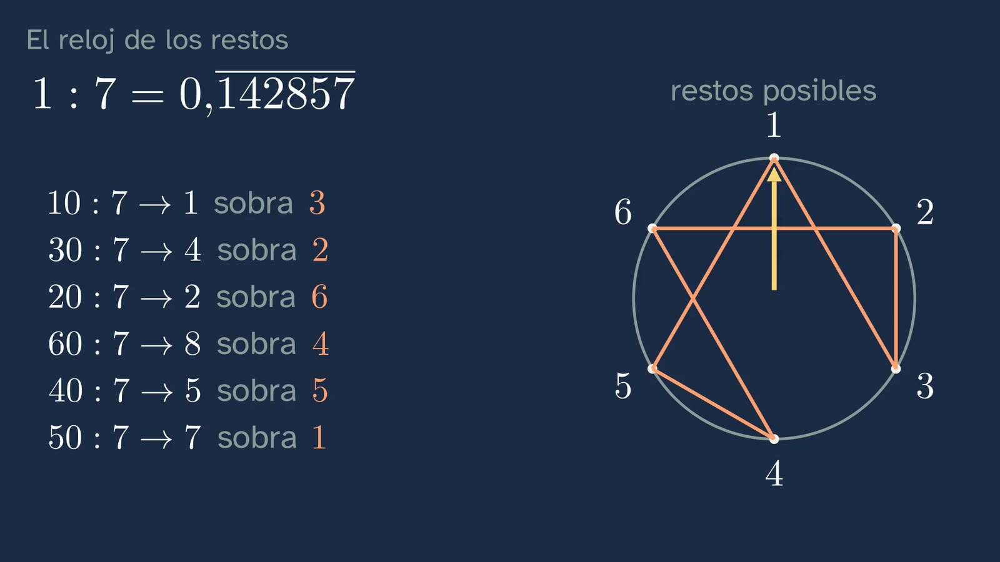
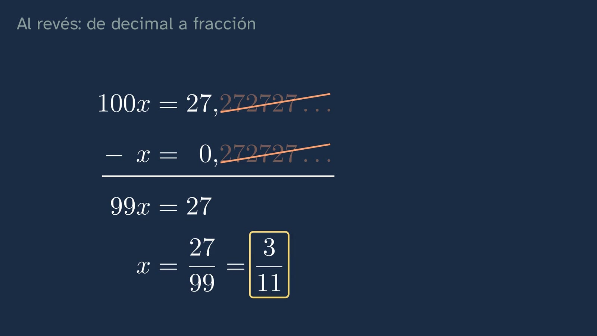
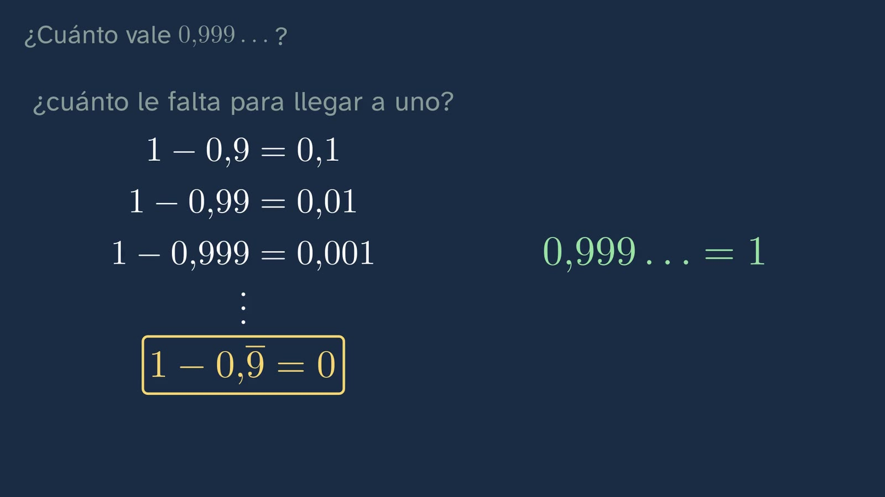
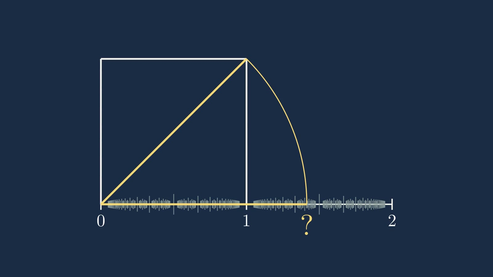

Do fractions fill the number line?
In a nutshell
The class starts from a question that looks easy: if we mark every fraction on the number line, is any gap left? It does not answer it (that is the bet that opens class 2), but it prepares the ground: fractions are dense, their decimals always end or repeat and, conversely, every repeating decimal is a fraction. The heart of the class is the clock of remainders, which turns a long division into a proof you can see.
Objective. By the end, students will be able to tell from its decimals whether a number is a fraction, go from one form to the other, and explain why there is always another fraction between two fractions.
For readers outside Spain: the Bachillerato is the last two years of secondary school (ages 16–18). The video is in Spanish, with English subtitles; the images on this sheet come from the video and keep their Spanish text. In Spain the decimal separator is a comma: 0,75 means 0.75.
Curriculum
Spain's Royal Decree 243/2022, Mathematics I. Our translation of the official Spanish text.
| Element | What the decree says | Where the class works on it |
|---|---|---|
| Core knowledge A.1 | "Strategies for operating with real numbers and vectors: mental or written calculation in simple cases and with technological tools in more complicated ones." | Going from fraction to decimal and from decimal to fraction |
| Core knowledge F.1 | "Handling error, individually and collectively, as something that mobilises previously acquired knowledge and creates learning opportunities in the mathematics classroom." | What is 0.999…?: the typical mistake, taken apart |
| Specific competence 2 | "To verify the validity of the possible solutions of a problem using reasoning and argument to assess their suitability." | Checking 27/99 = 3/11 by dividing |
| Specific competence 3 | "To formulate or investigate conjectures or problems, using reasoning, argument, creativity and technological tools, to generate new mathematical knowledge." | The opening bet and the clock of remainders |
| Specific competence 5 | "To establish, investigate and use connections between different mathematical ideas, linking concepts, procedures, arguments and models to give meaning to and structure mathematical learning." | Division, the number line and fractions as three sides of the same thing |
| Specific competence 9 | "To use personal and social skills, identifying and managing one's own emotions, respecting those of others and actively organising work in diverse teams, learning from error as part of the learning process and facing situations of uncertainty, in order to persevere in achieving goals in learning mathematics." | The intuition about 0.999…, acknowledged before correcting it |
| Criterion 2.1 | "To check the mathematical validity of the possible solutions of a problem, using reasoning and argument." | The checks in the class |
| Criterion 3.1 | "To acquire new mathematical knowledge by formulating conjectures and problems in a guided way." | The clock-of-remainders activity |
| Criterion 5.1 | "To show an integrated view of mathematics, investigating and connecting different mathematical ideas." | Decimals, fractions and the number line |
| Criterion 9.1 | "To face situations of uncertainty by identifying and managing emotions and by accepting and learning from error as part of the process of learning mathematics." | The 0.999… challenge |
What students bring from lower secondary (ESO): fractions and decimals, and division with decimals.
How the class is built
Video chapters: 0:00 What we'll see · 0:17 The question · 1:15 What you already know · 2:09 There is always another one · 3:20 The clock of remainders · 5:33 The other way: from decimal to fraction · 8:11 How much is 0.999…? · 9:44 Practice and keep thinking
Eleven minutes, in eight chapters. The class follows the channel's learning principles (in Spanish): each idea is predicted before it is seen, proved (not asserted) and practised.
| Chapter | What happens | Why this way |
|---|---|---|
| What we'll see | Ximena introduces the topic and the map of its six classes, with today's highlighted. | Knowing where you are and where you're going helps organise what you learn. |
| The question | Ximena poses the puzzle and students bet yes or no, with a pause. | Predicting before seeing commits you to an answer and makes the explanation matter. |
| What you already know | 3/4 = 0.75 and 1/3 = 0.333…, with a pause to answer before seeing it. | Retrieving what you know fixes it better than hearing it again. |
| There is always another one | Zooming in on the line; the midpoint of 1/3 and 1/2 is 5/12; and why it always works. | First the intuition (the zoom), then the exact version (the general argument). |
| The clock of remainders | Dividing 1 by 7 step by step; the remainders go round a six-hour clock. | The proof can be seen: there are only six possible remainders, so the cycle is inevitable. |
| The other way: from decimal to fraction | 0.2727… = 27/99 = 3/11, checked by dividing; the general rule and the case of 1/6. | The "trick" is justified and generalised, not memorised. |
| How much is 0.999…? | The challenge, and three different routes that lead to 1. | The typical mistake is raised respectfully and taken apart by reasoning. |
| Practice and keep thinking | Three exercises, an open question and the square's diagonal as the link to class 2. | Spaced practice: the solutions come at the start of the next class. |

A plan for a 50-minute lesson
| Minutes | What to do |
|---|---|
| 0–5 | No video: the bet. Are there gaps on the line if we mark every fraction? Each student writes yes or no, and why. |
| 5–15 | Video from 0:00 to 3:20 (up to "The clock of remainders"). Pause at each "stop and think" and let them answer before going on. |
| 15–25 | Video from 3:20 to 5:33 (the clock of remainders). Before going on, in pairs: how would you turn 0.2727… into a fraction? Then video from 5:33 to 8:11. |
| 25–45 | The clock-of-remainders activity, with the conjecture put to the test with 1/21. |
| 45–50 | Video from 8:11 to the end: what is 0.999…? The open question for homework, and the worksheet with the three exercises. |
Typical mistakes and how they are handled
- "0.999… is a tiny bit less than 1." The most stubborn one. The class takes it apart in three ways: with the trick of subtracting the tails, with 1/3 · 3, and by asking how far it is from 1 (less than any amount: zero). It helps to acknowledge that the intuition is natural before correcting it.
- "If it has infinitely many digits, it is not a fraction." 1/3 has them. The class separates infinitely many digits from digits that repeat.
- "0.999… and 1 are different numbers because they are written differently." This is the seed of the open question: the same number can have two decimal expansions.
- Always multiplying by 10 to turn it into a fraction. You multiply by 10, 100 or 1000 depending on the digits of the period; if the period starts later (1/6 = 0.1666…), two multiplications are combined.

Questions and solutions
Stop and think (in the video)
- What is 3/4? And 1/3? 0.75 (it ends) and 0.333… (it repeats).
- The remainder is 1 again, as at the start: what will happen now? Everything repeats: 1/7 = 0.142857 142857…
- Divide 3 by 11. Remainders 3, 8, 3: the 3 comes back, so 3/11 = 0.2727…
- What is 0.999…? Exactly 1.
Practice (the solutions open class 2)
- 0.4545… as a fraction. Period of two digits: 100x − x = 45, so 99x = 45 and x = 45/99 = 5/11.
- Do 1/8 and 1/12 end or repeat? Why? 1/8 = 0.125 ends: when dividing, a remainder reaches zero (remainders 1, 2, 4, 0). 1/12 = 0.08333… repeats. The underlying reason: a fraction in lowest terms has decimals that end if and only if its denominator has no prime factors other than 2 and 5 (8 = 2³; 12 = 2² · 3).
- Three fractions between 1/3 and 1/2. For example, 5/12 (the midpoint), 3/8 and 11/24 (the midpoints of the two pieces); or 2/5, 3/7 and 4/9.

Keep thinking. If 0.999… and 1 are the same number, a number cannot be what we write. So what is a number? It has no textbook answer. It helps to distinguish a number from its representations (numeral, fraction, decimal, point on the line) and to glimpse a classic philosophical question: are numbers discovered or invented? The video leaves it open on purpose.

A classroom activity
The clock of remainders, on paper (20–25 minutes, in pairs).
- Each pair gets a denominator: 3, 7, 11, 13 or 17. They divide 1 by it by hand, writing down the remainders, until one repeats, and draw its clock (as many hours as the denominator minus one).
- Share the lengths of the period: 1/3 → 1; 1/7 → 6; 1/11 → 2; 1/13 → 6; 1/17 → 16.
- Conjecture (competence 3): what is the relationship between the denominator and the length of the period? With these data it appears that the period never exceeds the denominator minus one and always divides it (12 = 6 · 2; 10 = 2 · 5).
- Check (competence 2): what happens with 2/7? (It goes round the same clock as 1/7, starting at 2.) And with 1/8 or 1/40? (The clock stops: some remainder reaches zero.)
- The conjecture, put to the test (competences 2 and 3): what about 1/21? Its period is 6, and 20 is not a multiple of 6: the conjecture fails. It is not thrown away but refined: what did 3, 7, 11, 13 and 17 have in common that 21 does not? (They are prime.) A conjecture that survives a serious attempt to knock it down is worth more; one that falls teaches you to make it more precise.
For teachers: that the period of 1/p divides p − 1 when p is prime (other than 2 and 5) follows from Fermat's little theorem. There is no need to prove it in the first year: it is enough for the class to conjecture it from data, test it with 1/21 and refine it. If someone asks about 1/27 (period 3, which does not divide 26 either), it confirms the same thing: the rule is about primes.

Sources
- Royal Decree 243/2022, of 5 April, establishing the organisation and minimum teaching requirements of the Bachillerato (BOE): https://www.boe.es/buscar/act.php?id=BOE-A-2022-5521.
- Everything else is proved in the class itself. The calculations on this sheet have been checked by running them.
About this class
GinCol Lab is a free science channel for curious minds. Ximena is an illustrated character with a synthetic, computer-generated voice that does not imitate any known person; the script and this sheet are written by an AI (Claude, by Anthropic) and reviewed by a person before publishing. This English version was translated by the same AI. If you spot a mistake, tell us: learning also means correcting.
This sheet is published under a Creative Commons Attribution 4.0 licence: you can copy it, adapt it and use it in your classroom, crediting GinCol Lab.
How to cite this sheet
GinCol Lab (2026). Do fractions fill the number line? GinCol Lab teacher sheet: Mathematics I · 1st year of Bachillerato · Real numbers · Class 1 of 6. https://gincollab.github.io/aula/en/matematicas-i/t01-c1/. CC BY 4.0.
GinCol Lab teacher sheet · CC BY 4.0 · Source and errata